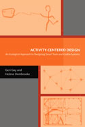

|  |
| About IR |
| Editors |
| Author instructions |
| Copyright |
| Author index |
| Subject index |
| Search |
| Reviews |
| Register |
| Home |
Gay, Geri and Hembrooke, Helene Activity-centred design: an ecological approach to designing smart tools and usable systems. Cambridge, MA: MIT Press, 2004. xxi, 111p. ISBN 0-262-07248-3 $30.00
This is a volume within the MIT Press Acting with Technology series which is concerned with the 'study of meaningful human activity as it is mediated by tools and technologies'. The series is edited by Bonnie Nardi, Victor Kaptelinin and Kirsten Foot and so draws both on an impressive record of work in the area as well as on very clearly expressed views and approaches to making the most of technology.
This book is organised to give readers an introduction to the key theoretical base of Activity Theory in Chapter One and then move on to look at some applications of the approach and extensions of it in Chapters Two to Five. These chapters are based on case studies and provide a range of insights and comments both on approaches in general and on the specific situations they deal with. Chapter Six draws together some of the key messages from the earlier chapters and provides some pointers to the way in which the field may develop and tools that could be utilised to help it to do so. The authors identify wireless and ubiquitous computing as an especially fruitful area for investigation and comment that 'recent developments in pervasive, ubiquitous computing networks and the devices that connect with them, [which] are radically changing our relationships with personal computing devices'. This corresponds with a shift from user centred design to context based design in the Human Computer Interaction field.
The book provides a useful, albeit brief introduction to Activity Theory - if readers need a more thorough introduction some good sources are referenced. The authors go on to chart very clearly what they see as the contribution that ecological theories have to make to the approach. This is an effective scene-setter for the following chapters, which illustrate the issues that surround development in some of the fastest moving areas of information technology systems design. The case studies are an effective mix of theory, explanation of context and comment and feedback from both users and the writers and deal with online learning, museum guide systems, wireless computing on a university campus and the development of a context-aware system. The cases stand alone but also build up to provide a picture of a fast-moving and hard-to-conceptualise set of developments, which benefit from the broad lens which is brought to bear on them. This broad lens varies from situation to situation but always emphasises the socio-cultural and historical contexts of the systems under discussion. Social Construction of Technology is used in Chapter Two to look at the network of systems and stakeholder goals that inform and determine how mobile computing can be used in Museums. Chapter Three describes the process of using a common virtual learning space and does so from a broad interpretative perspective, leading to the conclusion that such spaces have much to offer but that 'the challenge for the designers of these technologies is to create simple environments that foster complex, supportive interactions'. Chapter Four takes an explicitly ecological approach to the evaluation of the use of wireless mobile computers in a higher education setting and also makes an attempt to plot and picture the space in which this activity takes place. The chapter evaluates the experiment and uses the results to highlight the mediating role of tools in systems as well the need to look at tools not in isolation but in relation to one another. Chapter Five is perhaps the least concrete of the case study chapters, dealing as it does with the work in progress of building a context-aware computing environment. The emphasis here is firmly on context-aware computing and it is interestingly illustrated by a couple of specific exemplars and applications. The chapter leads to the conclusion that 'context seems to be indeed shaped by those activities that transpire in it and those activities in turn shape the context of the communication'.
Chapter Six is a different animal entirely. The chapter sets out the need for tools to make use of the large datasets that are starting to be accumulated in research on virtual settings, wireless applications and ubiquitous computing contexts. The authors argue that we need to be able to conceptualise these datasets to make sense of them and manipulate them and our understanding of them. A range of tools is explored, including configuration theory and non-discursive techniques for evaluating space. This is a short chapter and it poses more question than it answers, but it does so elegantly, persuasively and with a sense of possibility and broad vistas beyond.
In short, this is a highly readable book whose separate chapters stand on their own merits but also build up in a very polished and confident manner to a whole that is much greater than the sum of its parts. It poses questions and offers some tentative answers on which it will be fascinating to watch the authors and others build in the future.
Alistair Norman
AIMTech Research Group
Leeds University Business School
July 2004
How to cite this review
Norman, Alistair (2004). Review of: Gay, Geri and Hembrooke, Helene Activity-centred design: an ecological approach to designing smart tools and usable systems. Cambridge, MA: MIT Press, 2004. Information Research, 9(4), review no. R138 [Available at: http://informationr.net/ir/reviews/revs138.html]